|

Clique aqui
para visitar o
Acervo de colunas


|
A
hora mais sombria de Sisko! Este artigo apresenta um formato deveras simples, se dividindo em uma primeira parte que dedicada a uma breve viso geral da sexta temporada de DS9 e uma segunda parte mais extensa, que trata da temporada, episdio a episdio (incluindo spoilers!).
Breve viso geral da sexta temporada de DS9 A sexta temporada de Deep space Nine lembrada tipicamente pela maioria de seus fs tanto por ter sido a mais importante (e mais sombria) temporada do personagem de Ben Sisko quanto como uma temporada que poderia ter sido muito melhor (em planejamento e em execuo) do que foi. A temporada retrata de forma exemplar o personagem do capito Sisko como figura trgica e central tanto do conflito entre a Federao e o Dominion quanto do inevitvel e derradeiro confronto entre os Profetas e os seus eternos inimigos, os Pagh-Wraiths (seu papel como Emissrio tratado de forma cada vez mais direta at o final da srie). Sisko colocado sob imensa presso em eventos como: seu trgico conflito com os Jem'hadar em "Rocks and Shoals", ter a certeza - dada pelos prprios Profetas - de que nunca encontrar paz como visto em "Sacrifice Of Angels", sua macabra "valsa" com um enlouquecido Dukat (na esteira da morte de sua filha Zyial em "Sacrifice Of Angels") em "Waltz", personificar o enigmtico escritor Benny Russel no mgico "Far Beyond the Stars", conspirar com Garak para trazer os Romulanos para o lado da Federao na guerra, no polmico "In The Pale Moonlight", "bancar Salomo" em "The Reckoning" e finalmente perder o contato com os Profetas e perder Jadzia (a personagem morre e Terry Farrel deixa a srie) no final da temporada em "Tears Of The Prophets". Foi uma grande temporada tambm para Bashir que encontra um grupo (apelidado pelos fs de DS9 de "The Jack Pack") de quatro humanos geneticamente aperfeioados (como ele) em "Statistical Probabilities" e "recrutado" (pelo personagem Sloan, vivido por William Sadler) para a SEO31 em "Inquisition". Ao lado do crescimento do personagem Nog (que recebe uma promoo de campo a alferes em "Favor The Bold") e da introduo do personagem do almirante Bill Ross (vivido por Barry Jenner e que se apresentaria como o superior imediato de Sisko at o final da srie) temos tambm o primeiro (e grandemente aguardado) beijo entre Odo e Kira em "His Way" (que marca a estria do personagem do cantor hologrfico Vic Fontaine, vivido por James Darren, o Tony da srie "The Time Tunnel" de Irwing Allen). Worf recebe Jadzia em matrimnio em "You Are Cordially Invited" s para ultimamente perd-la em "Tears Of The Prophets". Infelizmente a temporada tambm teve alguns srios problemas. A principal fonte de tais deficincias brota do fato que manter o arco de uma guerra das propores sugeridas na srie exige um grande foco, realmente no d para esquecer do conflito por muitos episdios sob o risco de perda de credibilidade. Coincidentemente os melhores momentos da srie nesta sexta temporada ocorreram em segmentos que enfocavam os seus arcos principais e os piores se deram em episdios literalmente alheios ao material central de DS9 (arco do Dominion e arco do Emissrio). Como se este fosse de fato o caminho mais orgnico e natural a ser percorrido. Em certas ocasies um segmento at enfocava um dos arcos, mas era incapaz de levar o arco a frente de uma maneira slida, por vezes at levantando elementos interessantes, mas que no recebiam uma apropriada conseqncia em episdios posteriores. E por ltimo talvez o problema mais grave em que se observa que no somente faltou propsito a srie em certos momentos (como discutido acima), mas tambm a qualidade bruta da escrita se mostrou inferior a das duas temporadas anteriores (apesar de ainda assim termos alguns dos melhores momentos da srie nesta sexta temporada). Talvez uma das causas para tais problemas seja a ausncia de Robert Hewitt Wolfe (substitudo na equipe de roteiristas pela limitada dupla formada por Bradley Thompson e David Weddle) tanto pela falta do escriba em si quanto pelo desequilbrio que isto trouxe a equipe (Ira Behr teve que achar um novo parceiro na pessoa de Hans Beimler, por exemplo). Felizmente grande parte de tais deficincias foi identificada e atacada na stima e ltima temporada da srie.
A temporada, episdio a episdio "A Time to Stand" (****) A guerra no vai bem para a Federao, o almirante Ross decide autorizar uma arriscada misso em territrio Cardassiano para destruir um depsito de Ketracel White. A bordo da nave JemHadar, obtida em The Ship, partem Sisko, Dax, OBrien, Bashir, Nog e Garak. Durante a misso Sisko se v sob fogo amigo e tem que combater a nave Federada para no derrubar o seu prprio disfarce. A misso tem sucesso, mas a exploso do depsito deixa os motores de dobra da nave inoperantes e assim Sisko e cia. terminam h 17 anos em fora de impulso de uma base Federada. 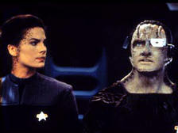 (NOTA: A temporada abre com um arco de seis episdios que culmina com a recuperao da estao pela Federao. Se incluirmos o final da temporada passada em Call To Arms em que a estao foi perdida e o prlogo da guerra em In The Cards chegamos fcil a um arco continuo com oito episdios. Algo absolutamente indito para Jornada.) "Rocks and Shoals" (****) Mais um clssico episdio, em que Sisko e cia. (dando seqncia aos eventos finais de "A Time To Stand") se vem acidentados em um planeta onde tambm caiu um grupo de soldados JemHadar com o seu Vorta beira da morte. O Vorta no poder controlar os seus soldados por muito mais tempo, pois o seu suprimento de Ketracel White --droga fundamental para a estabilidade e obedincia dos Jem'Hadar-- est acabando. Ento o Vorta (de nome Keevan, vivido de forma odiosa e genial por Christopher Shea) oferece a Sisko o plano de ataque dos seus soldados e em troca da ajuda de Sisko em se livrar de seus comandados ele promete um transmissor que pode se reparado por O'Brien para tirar todos os sobreviventes dali. Sisko aceita a oferta, mas ainda tenta dissuadir o lder dos Jem'Hadar (de nome Remata'Klan, vivido brilhantemente por Phil Morris) e buscar uma alternativa. No conseguindo, devido nobreza dos Jem'Hadar e sua obedincia "ordem das coisas", os Jem'Hadar acabam por atacar e so exterminados pelo pessoal de Sisko. Quando a poeira abaixa e ningum mais se mexe chega Keevan, com o transmissor, e diz que se ele tivesse apenas mais algumas ampolas de "White", Sisko e seus homens que estariam todos mortos estirados no cho. Uma trgica histria que faz dos Jem'Hadar (aqui em sua melhor hora em toda a srie) criaturas extremamente complexas com as quais podemos de fato simpatizar, um admirvel feito do roteirista Ronald D. Moore. Ao mesmo tempo, na estao Deep Space Nine, temos uma histria secundria em que Kira comea a se sentir como uma burocrata "Colaboradora" do Dominion e a ver iminente no horizonte o fantasma de uma nova Ocupao Bajoriana. Aps o suicdio pblico da Vedek Yassim (que se enforca em pleno Promenade, tendo para ltimas palavras: "O mal tem que ser combatido!"), Kira tem certeza que tem que fazer algo a respeito e inicia um movimento de resistncia com Odo. Histria tambm brilhante, como a principal, compacto e denso material, muito fiel ao mago dos personagens envolvidos. A direo extremamente visual de Mike Vejar brilhante. "Sons and Daughters" (*) O filho de Worf, Alexander Rozhenko (agora um adolescente vivido por Marc Worden), decide se alistar no esforo de guerra contra o Dominion e designado para a nave de Martok, a Rotarran. Uma histria que tinha por objetivo reavaliar as decises passadas de Worf como pai naufraga vergonhosamente, primeiro por que os motivos de Alexander para se tornar um guerreiro nunca so feitos claros (o que seria absolutamente necessrio, pois o personagem sempre quis justamente o contrrio em suas aparies anteriores em A Nova Gerao) e em segundo lugar as demonstraes da falta de habilidade de Alexander para a vida de um guerreiro so exageradas, beirando o completo pastelo (deixando os espectadores a imaginar exatamente como ele conseguiu se alistar em primeiro lugar). Uma histria paralela envolvendo a reaproximao entre Zyial (vinda de Bajor) e Dukat tem mais sorte, ainda assim nada que brilhe no escuro. Dukat parece decidido a reconquistar a filha (que ele deixou para morrer em By Infernos Light) e tambm Kira, usando a relao entre elas para conquistar uma depois outra. Uma cena deliciosa quando Kira recusa um presente de Dukat que fica desapontado s para em seguida, virar o rosto, abrir um largo sorriso e dar o presente a Zyial reconquistando-a Dukat, como sempre, o heri de sua prpria histria. "Behind the Lines" (***1/2) 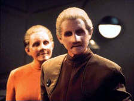 A participao ativa de Quark e o iminente desmantelamento do campo minado por parte de Dukat e cia. so excelente preparao para os episdios posteriores. A Queda de Odo vista aqui nada menos que espetacular (Auberjonois e Jens so timos juntos em cenas que trazem grande senso de deslumbramento sobre a natureza do Grande Elo), ainda que tenha se mostrado demais para os roteiristas lidarem posteriormente. Uma excelente histria secundria completa o segmento. Sisko designado como adjunto do almirante Ross para estabelecer estratgias globais para a guerra. As cenas em que Sisko v a Defiant partir para uma misso arriscada sob o comando de Dax e depois retornar com sucesso so simplesmente maravilhosas. "Favor the Bold" (***1/2) O segmento em suma um grande posicionamento de peas para a concluso do arco no episdio seguinte: Sisko convence o comando da Frota Estelar a mobilizar algumas das suas maiores Frotas de naves para retomar DS9 (o principal ponto estratgico do quadrante por ficar na borda da fenda espacial), Odo introduzindo a Fundadora ao sexo slido (!) e ficando assustado por ter passado trs dias nos seus aposentos sem perceber, Kira dizendo a Odo que a relao entre os dois est muito alm de um pedido de desculpas (alm de limpar o cho com o Damar), Dukat mostrando cada vez a necessidade de ter algum tipo de validao para os seus atos (vendo em Zyial o ltimo refgio de tal aprovao, por ela ser sua filha e tambm parte Bajoriana), Quark cada vez mais decidido a ajudar (principalmente agora com a iminente execuo de Rom) e at mesmo Morn levando para Sisko a mensagem da iminente queda do campo minado. Uma cena se destaca em que Sisko (falando ao almirante Ross) afirma seu amor por Bajor e diz que est decidido a estabelecer residncia no planeta e viver l todos os dias que puder. Como uma slida preparao o segmento funciona como poucos. "Sacrifice of Angels" (***1/2) Uma frota de cerca de 600 naves Federadas sob o comando de Sisko a bordo da Defiant se encontram com uma barricada (!?) de naves da aliana do Dominion com o dobro de naves. Sisko usa uma estratgia para furar as linhas inimigas que Dukat na estao planeja usar contra ele e sufocar os seus esforos. 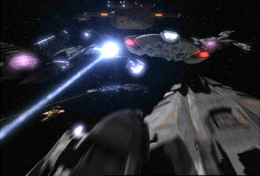 Damar prende Kira, Jake e Leeta junto com Rom. Odo fica sabendo pela Fundadora da prxima execuo de Kira e parece despertar do torpor provocado pelo Elo. Sisko lidera um grupo de naves que se infiltra nas linhas inimigas, quando a Defiant parece que vai ser esmagada, uma frota de naves Klingons (trazida de ltima hora por Martok e Worf) comea a atacar o flanco da Frota do Dominion dando a chance da Defiant furar o bloqueio e rumar para a estao. Dukat ordena que nenhuma nave v atrs dela, a estao mais do que preo para a Defiant. Quark recruta a ajuda de Zyial e consegue livrar Kira e cia. do xadrez. Kira e Rom decidem desabilitar as armas da estao para impedir a detonao das minas no que so ajudados em cima da hora por Odo e a sua fora de segurana Bajoriana. Infelizmente Rom desativa as armas um segundo tarde demais. Mesmo com a queda do campo minado e decidido a retardar de qualquer maneira os reforos inimigos vindos do Quadrante Gama, Sisko entra na Fenda Espacial. Sisko tem uma viso dos Profetas, que no querem deixar que ele cometa suicdio. O capito acaba por convence-los a ajudar Bajor. Eles decidem ajudar, mas avisam Sisko que ele ter que pagar uma "pena" por causa disto e que ele nunca encontrar paz em Bajor, apesar de "ser de Bajor". Os Profetas fazem desaparecer a Frota do Dominion e fecham a Fenda espacial (que s reabriria com o final da guerra e da srie). A Defiant emerge sozinha da Fenda espacial, para desespero de Dukat. Mais naves da Federao se livram do bloqueio e Weyoum (percebendo que os reforos no viro do Quadrante Gama e com uma estao incapacitada) ordena a retirada das foras do Dominion de DS9 (rumo ao territrio Cardassiano). Com a segunda perda deste comando e com a morte de sua filha Zyial (que morre pelas mos de Damar, aps ser descoberta a sua traio), ele tem um colapso mental (sendo o nico soldado da aliana do Dominion a ficar para trs). Ele devolve a bola de beisebol a Sisko, dizendo que o perdoa (ou seria Zyial?), que retoma finalmente o comando de DS9. Sacrifice funciona como um delicioso thriller de ao (de execuo impecvel nestes termos e com talvez os melhores efeitos visuais de batalhas espaciais vistos na TV Americana at a poca de sua exibio original), mas est muito longe de ser uma coerente conseqncia dramtica para o que veio antes. No difcil identificar vrias convenincias (e outros problemas) de trama na descrio acima (existem de fato ainda outras) e uma extrema falha com relao aos personagens na sbita mudana de atitude de Odo, principalmente por Behind The Lines parecer tornar o comissrio to (extremamente) distante de Kira e dos demais. (O acerto de contas entre Odo e Kira seria reduzido a uma literal conversa dentro do armrio no episdio seguinte e o assunto posteriormente esquecido.) Apesar deste grave seno, que acaba sendo talvez o maior problema de todo este arco (ao lado de Sons And Daughters praticamente todo, claro), no deve passar sem registro o que acontece com os personagens de Sisko e Dukat no segmento. , sobretudo fascinante observar como a ajuda que Sisko pede aos Profetas aqui acaba selando o destino do capito (e de Dukat), como os prprios deuses de Bajor dizem a ele. Seno vejamos, tal ajuda leva a queda de Dukat no abismo da loucura, que o leva ao papel de Emissrio dos Pagh-Wraiths e da ao confronto definitivo (e mortal) entre os dois no episdio final da srie. "You Are Cordially Invited" (***) Funciona perfeitamente como um bom "episdio-evento" (o casamento Klingon entre Jadzia e Worf) e os valores de produo no decepcionam (nada mais que isto). A histria aquela "tpica histria de casamento" que desmarcado e remarcado seguidamente durante o curso do segmento. Jadzia tem que provar, para a esposa do general (de nome Sirella e vivida por Shannon Cochran), que digna de entrar para a "Casa de Martok" (da qual Worf agora faz parte). O que ela acaba conseguindo, com alguma dificuldade (especialmente devido ao "gnio forte" dela e de Sirella), aps uma conversa com Sisko. Worf, Martok, Sisko, Bashir, O'Brien e Alexander por sua vez, se envolvem em uma espcie de "despedida de solteiro Klingon", que obviamente uma sucesso de rituais de dor e sofrimento. Jadzia tambm teve uma despedida de solteira, com direito a danas tribais e engolidores de fogo. Os votos so bonitos e acabam tendo um interessante "payoff" mais frente na temporada em "Change of Heart". tima a idia de Bashir e O'Brien golpeando Worf com imensos porretes (somente o som, j sobre os crditos finais). "Resurrection" (SEM ESTRELAS) Bem, os "Amigos e Amigas do [falecido] Vedek Bareil" conseguiram finalmente traze-lo de volta a srie (ao menos de certa forma). Neste segmento, Mirror-Bareil (Philip Anglim) cruza do "universo do espelho" para o "nosso universo" deixando a major Kira com dificuldades para entender os seus sentimentos. O que poderia ser uma interessante Jornada espiritual de um ladro para abraar a religio Bajoriana ou para encontrar redeno de alguma forma, se transforma em um exerccio de previsibilidade com a chegada da Intendente (Mirror-Kira) que simplesmente est usando o Mirror-Bareil para roubar um Orb e conseguir uma vantagem ttica (prever o futuro) no seu universo (se o Orb iria funcionar ou no nestas condies, isto desconhecido). A concluso covarde e banal, com o Mirror-Bareil no roubando o Orb, mas voltando ao seu universo com a Intendente. O segmento no modifica nada em nenhum dos dois universos no presente e tampouco no futuro, no relevante para nenhum arco de histria e joga ainda mais para escanteio os assuntos pendentes entre Kira e Odo. Absolutamente lastimvel hora de televiso! "Statistical Probabilities" (***1/2) 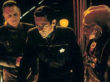 O episdio apresenta com clareza a partir deste ponto a megalomania que brota naturalmente de tais pessoas geneticamente aperfeioadas e do por que a populao teme-las e haver leis regulando as prticas ligadas a sua criao. Bashir pego na inteno de socializa-los e na prpria arrogncia partilhada pelo quinteto, no percebe isto at quase ser tarde demais, at quase Jack passar informaes confidenciais para Weyoum e Damar (em misso diplomtica na estao) de forma a permitir uma vitria rpida do Dominion que pouparia centenas de milhes de vidas. Sarina acaba avisando Bashir que impede que isto ocorra em cima da hora, ficando Jack com cara de tolo por perceber no ter conseguido levar em conta nem as lealdades de algum que ele conhece h anos. Toca em aspectos interessantes da sociedade Federada, oferece uma viso alternativa da guerra e acaba resgatando diversos temas de Jornada Clssica, apesar de ficar a dvida sobre a sanidade mental de quem deixou material confidencial sobre uma guerra terrvel como esta nas mos de um bando de malucos. "The Magnificent Ferengi" (***) Esta (com as devidas desculpas antecipadas ao falecido Akira Kurosawa) "Verso Ferengi para 'Os Sete Samurais' " (TM), tem uma das mais absurdas histrias de toda a srie, que acaba funcionando milagrosamente (e inexplicavelmente) como um boa e agradvel hora de televiso. Vejamos a (?!) histria: o Dominion rapta (por motivos desconhecidos e aparentemente inexplicveis) Ishka (a me de Quark e Rom); Zek (o grande Nagus Ferengi e namorado de Ishka) oferece uma boa recompensa para quem conseguir libertar a sua amada; Quark monta uma "equipe de resgate" formada por Rom, Nog, Leck (um espcie de assassino de aluguel atrapalhado), Gaila (primo de Quark, visto em "Business As Usual" da quinta temporada) e (claro) Brunt (que oferece a sua nave na esperana de conseguir algum favor junto ao Nagus), os quais somados a Ishka do os tais "sete Ferengis"; Quark convence a Frota e ao Dominion a fazer uma "troca de prisioneiros", Keevan (o odioso Vorta de "Rocks And Shoals") pela me de Quark e a troca de prisioneiros se dar em Empok Nor (a estao gmea e abandonada de DS9 vista em "Empok Nor" da quinta temporada) sob os auspcios do Vorta Yelgrun (vivido por Iggy Pop e O AUTOR NO EST BRINCANDO QUANTO A ISTO!). Tal absurdo se encerra com Keevan morto (com o cadver animado por estimuladores neurais - no melhor estilo do filme "Weekend at Bernie's" - continuamente dando de cara em uma parede ao final do episdio), Ishka recuperada e Yelgrun como prisioneiro da Federao. Nada disto faz algum sentido, mas esta a histria e s de escrev-la j so dadas boas risadas. "Waltz" (***1/2) A nave estelar que transporta Sisko e Dukat, rumando para o julgamento do Cardassiano, atacada pelos JemHadar. Dukat consegue pilotar uma nave auxiliar e salvar a vida do capito Federado, este com graves queimaduras e um brao com mltiplas fraturas. Dukat ativa um transmissor com um sinal de socorro genrico, e comea a conversar com Sisko a espera do resgate e medida que seus demnios interiores afloram (ele tem vises que tomam forma de Weyoun, Damar e Kira), a real face do Cardassiano se mostra para Sisko. O cenrio incrivelmente simples, mas tanto o texto cheio de nuances de detalhes de Ron Moore, a direo criativa de Auberjonois e as performances excepcionais de Alaimo e Brooks so de uma complexidade admirvel. Talvez entrar na mente de algum como Dukat seja uma coisa abominvel para a maioria das pessoas (mesmo ficar perto dele j seja temerrio para muitos). Talvez mais repulsivo ainda seja perceber encontrar alguma qualidade redentora em um homem que admite o dio que o Cardassiano admite aqui. E fascinante simplificar um personagem to complexo e ainda assim presenciar to complexa exibio. Ao final, Dukat consegue escapar jurando vingana contra o povo que um dia oprimiu. Sisko jura, custe o que custar, no deixar Dukat ferir Bajor novamente. Ambos seguiram o caminho de tais escolhas at o seu amargo fim. "Who Mourns for Morn?" (**) "Who Mourns for Morn?" Tinha tudo para se tornar um clssico, comeando pelo ttulo bem sacado e o memorial do personagem Morn, logo em seu incio (com direito a um absurdo discurso de Quark). Depois deriva em todos os clichs possveis das histrias de "Gangs de ladres que se renem depois de muito tempo para recuperar o produto de um antigo e ltimo roubo" (comeam a aparecer os antigos comparsas de Morn na estao procurando por ele e sempre dando desculpas esfarrapadas, obviamente querendo saber onde Morn - que obviamente no est morto - escondeu o produto "perdido" do roubo, tudo muito transparente e bvio, exceto para o Quark talvez); sem muita energia, sem muitas surpresas, previsvel a maior parte do tempo. Um episdio fraco, na melhor das hipteses. (Mark Allan Shephard SEMPRE "interpretou" Morn, mascote oficial de DS9, que nunca pronunciou uma palavra em cena -- apesar de ter a fama de falastro fora dela -- da sempre recebendo como um extra, apesar do esforo envolvido devido a complexa maquiagem do personagem. O nome "Morn" vem do nome "Norm" de um personagem da srie de comdia "Cheers", que era justamente ambientada em um bar.) "Far Beyond the Stars" (****) Quando a fora de vontade de Sisko comea a falhar frente devastao trazida pela guerra, o capito sofre uma espcie de desmaio, e os Profetas lhe enviam uma viso em que ele um escritor negro de fico cientfica dos anos 1950 de nome Benny Russell que quer escrever, pasmem, Deep Space Nine. Os atores de DS9, sem maquiagem, povoam o cenrio do Harlem onde se passa a histria. Os personagens vividos pelos atores de Kira (uma escritora que finge ser um homem devido ao preconceito no meio), Bashir (tambm escritor e seu marido), OBrien (um escritor perito em histrias de robs), Quark (um escritor com aparentes conexes comunistas), Dax (a secretria linda e burra), Martok (o desenhista) e Odo (o editor) trabalham na mesma revista (Incredible Tales) que Benny. O personagem do ator de Nog trabalha em uma banca de jornal, o de Worf um jogador de beisebol, a personagem da atriz de Kasidy Yates trabalha em um restaurante e a namorada de Benny, o personagem do ator de Jake (que no filho de Benny) um pequeno trambiqueiro, os personagens dos atores de Weyoum e Dukat so dois policiais racistas e o personagem do ator do pai de Sisko (Joseph Sisko) um pastor das ruas. 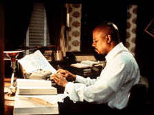 Ele sai para comemorar com sua namorada e mais tarde ao ouvir um tiro ele corre temendo o pior e perguntando o que houve, ele v Jake morto, tendo sido atingido pela polcia ao ser pego tentando roubar um carro. Ao agredir um dos dois policiais, ele massacrado por ambos (cujas imagens acabam sendo misturadas em cena com a dos reais Weyoum e Dukat). Algum tempo depois, ainda se recuperando da pica surra, ele aguarda na redao com os demais colegas seu editor com a nova edio da revista. Odo anuncia que o dono da revista ordenou a destruio de todo o nmero e antes que os protestos sobre isto aumentassem entre os empregados, ele tambm anunciou que Benny estava demitido. Benny no consegue mais se controlar e tem um colapso nervoso, dizendo que eles podem nega-lo o quanto quiserem, mas no podem negar Ben Sisko, a sua idia, pois no se pode destruir uma idia. Benny parte em uma ambulncia para uma instituio, ele acorda e percebe ao seu lado o pastor, que j havia aparecido para ele nas ruas e dito que ele devia escrever as palavras. Ele se v com o uniforme de Sisko e estrelas em dobra na janela traseira da ambulncia, como em uma nave estelar. O sonho e o sonhador reponde o pastor a pergunta de Benny sobre quem ele . Sisko finalmente acorda na enfermaria para felicidade dos seus amigos e familiares. Impecavelmente produzido e dirigido pelo prprio Avery Brooks, o segmento tem grande valor de entretenimento pela total quebra de formato e ousadia somente, seu enfoque sobre o racismo perspicaz e, na maior parte do tempo, bastante sutil. Mas no se resume a isto. Infelizmente muitos vem a significncia de Far Beyond The Stars simplesmente como um conto sobre o racismo. Na realidade o segmento tem um significado mais simples e provavelmente mais abrangente do que este. Como apresentado em sua resoluo, ele sobre manter os nossos sonhos vivos e lutar a boa luta, at o final. Partindo do pressuposto que se uma idia foi concebida, ela no pode destruda, ela passa a existir por si s de alguma maneira. O segmento uma homenagem a todos os Benny Russell que sonharam o nosso mundo e nos inspiraram a sonhar um futuro, sonhar, quem sabe, com tempos que valero a pena serem vividos. A cena final talvez a mais mgica de todas as Jornadas em que Sisko olha o espao ao longe e no lugar da sua imagem vemos a de Benny. Sisko no pode evitar pensar se DS9 (e todo o seu universo ficcional) no seria simplesmente fruto da imaginao de Benny ao invs do contrrio. A algo to tocante neste infinito crculo de reflexos entre um sonho e um sonhador, que qualquer comentrio parece incompleto ao tentar descreve-lo. "One Little Ship" (***) Este segmento, que poderia ser facilmente descrito em uma tacada s como: "Querido [Worf], eu encolhi o Explorador". Tem provavelmente a histria MAIS ABSURDA de toda a srie e talvez de toda a histria de Jornada Nas Estrelas. A Defiant envia, mantendo uma trava de raio trator, o Explorador Rubicon para o interior de uma anomalia gravitacional (cujas propriedades de fato reduzem as dimenses da nave auxiliar). Atacada pelos Jem'Hadar, a Defiant abordada, o raio trator se rompe e o Rubicon (com Jadzia, O'Brien e Bashir a bordo), voltando da anomalia por um caminho diferente do que seguiu para entrar, permanece miniaturizado (miniaturizado no melhor "estilo Terra de Gigantes"). Da a histria se torna como Jadzia e Cia. vo levar o explorador para o interior da Defiant e ajudar Sisko e Cia. a retomar a nave do comando dos soldados do Dominion. O episdio funciona por no se levar a srio em nenhum momento (isso seria a sua completa runa, em virtude da sua premissa inicial, que , alis, ridicularizada pelos prprios personagens na primeira cena) e dos absolutamente EXCEPCIONAIS efeitos visuais. Este episdio merece ser assistido nem que seja s pra presenciar a mgica que o mestre Gary Hutzel consegue fazer com modelos! Um bom episdio que costuma deixar um inexplicvel sorriso na boca dos fs. "Honor Among Thieves" (***) OBrien recebe a misso de se infiltrar no Sindicato Orion (organizao citada em The Ascent e Simple Investigation da quinta temporada) a servio da inteligncia da Frota. O chefe acaba fazendo amizade com Bilby (Nick Tate) que hipoteca sua palavra para colocar Miles na famlia. OBrien confirma que o Dominion pretende usar o pequeno grupo de Bilby para provar intriga dentro do governo Klingon atravs de um atentado a embaixada local. Os Klingons so avisados e aguardam para massacrar os mafiosos. OBrien, entretanto desenvolveu um grande afeto por Bilby, um homem de famlia assim como ele, apesar dos crimes. Ele avisa Bilby que fica chocado. Se ele for ao atentado ele est morto, se ele no for, a traio de OBrien vir a tona e ele tambm estar morto (por ter empenhado a palavra pelo chefe), assim como toda a sua famlia. Ele decide preservar a vida dos seus e vai ao encontro da morte, pedindo que OBrien tome conta do seu gato, Chester. Uma premissa muito pouco original, mas que rende belos dividendos dramticos graas as excepcionais atuaes de Meaney e Tate, que tornam reais todas as cenas e como realmente genuna a amizade que cresceu entre os seus personagens. Um belo drama. "Change of Heart" (***) 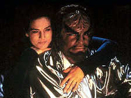 A histria aqui muito simples e recheada de momentos pra l de mundanos, se deve admitir, mas o que diz em ltima instncia, em uma bela cena de concluso com Sisko, bastante vlido. Worf diz finalmente entender o sentido dos seus votos de casamento em You Are Cordially Invited e mostra realmente que ama Jadzia (pela primeira vez na srie a relao dos dois parece de fato fazer sentido). A ausncia de uma corte marcial por motivos de segurana e a certeza de que Worf nunca vai ser promovido a uma posio de comando devido as suas aes so bastante adequadas dadas as circunstncias. (Apesar dos mencionados mritos do segmento uma pena que um assunto que deveria ser to importante como o dos Fundadores infiltrados no seio da Aliana Federada tenha se tornado to secundrio para a srie.) "Wrongs Darker Than Death or Night" (*) No dia do aniversrio de sua falecida me, Kira Meru, a major Kira Nerys recebe uma mensagem de Dukat dizendo que ele e Meru foram amantes nos tempos da Ocupao, algo no que Kira no consegue acreditar. Decidida a descobrir a verdade, ela convence Sisko a permitir a utilizao do Orb do tempo, que a envia ao passado e onde descobre que de fato sua me (ao contrrio da histria contada por seu pai) foi recrutada como uma espcie de odalisca, para o harm dos militares Cardassianos em troca de melhores condies de vida para o seu marido, uma pequena Nerys com os seus trs anos e seus dois irmos de colo. Nerys tambm recrutada como acompanhante estacionada em Terok Nor, sob o comando de Dukat. Meru fica fascinada com o relativo luxo de sua vida na estao e se torna uma presa fcil para o charmoso Dukat que a acolhe como sua amante oficial. Kira no tolera muito tempo esta situao e acaba se envolvendo com a resistncia daquela poca que lhe d uma misso de colocar uma bomba nos aposentos de Dukat para amtar o Cardassiano (e a sua me no processo). Nerys muda de opinio no ltimo momento e acaba salvando Meru (e por tabela Dukat) da exploso. Apesar disto, de volta ao presente, Nerys diz a Sisko ser incapaz de perdoar a sua me. O dispositivo de trama que coloca esta histria em movimento tambm acaba com qualquer tentativa dramtica do mesmo. Se Nerys est recebendo somente vises (ou recriaes) do passado e no vai poder altera-lo apesar de sua aparente interao com o mesmo, ento a histria est estruturada do jeito mais incuo e pouco criativo possvel, pois simplesmente histria no pode ser de Kira, por que ela no fato parte dela. Se de fato Kira podia mudar o passado (possibilidade que parece que ela nega de sada), ento s podemos admitir que os religiosos Bajorianos, Sisko e talvez os prprios Profetas sejam todos loucos em permitir tal coisa em primeiro lugar. Um fatal erro que leva imediatamente o segmento para o poo da completa e total indiferena. Lamentvel! "Inquisition" (***1/2) 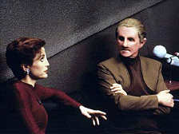 Neste momento termina a simulao mostrada em tela at aquele momento e surge o interior de um holodeck. Sloan e os seus homens so na realidade membros de uma organizao clandestina dentro da Federao, referida somente como SEO31. Sloan abduziu Bashir para testar suas habilidades e lealdades para a Federao e avisa ao doutor que ele passou e pode receber uma misso a qualquer momento, o que deixa Bashir chocado com o descaramento. Ao final, aps o doutor voltar a estao, Sisko diz que o comando da Frota no nega nem confirma a existncia de tal agenda, ao mesmo tempo em que apura que existia de fato uma diviso com tal nome na carta original de compromissos da Federao, mas nenhuma confirmao alm disto. O capito aconselha Bashir a aceitar a tal misso se ele vier para que eles possam saber mais tal organizao. A trama excelente, suportando mltiplas assistidas, as caracterizaes muito realistas (e contidas) idem e o conceito da SEO31 absolutamente brilhante, um produto da mente de Ira Behr a respeito da famosa frase de Sisko, fcil ser santo no paraso, de The Maquis II. Behr pensou sobre quem mantm o paraso na Terra, sobre quem mantm toda a sujeira longe dele. Da surgiu a idia da Agncia. "In the Pale Moonlight" (****) Saibam tudo sobre este clssico episdio aqui. "His Way" (***) Vic Fontaine, um cantor hologrfico de uma boate ambientada em Las Vegas em 1962, o mais sofisticado programa de entretenimento de Bashir utilizado nas holosuites do Quark's, decide dar lies a Odo sobre como conquistar o corao de Kira Nerys. Este episdio basicamente uma comdia de situao com muita (boa) msica e grande estilo, mas sem muita substncia (especialmente se comparado a outros segmentos que tratam do relacionamento do comissrio e da major, notadamente "Children Of Time" da quinta temporada e "Chimera" da stima temporada). Neste episdio rola o primeiro beijo entre Odo e Kira. Destaques para Nana Visitor interpretando "Fever" e a presena do sempre carismtico e talentoso James Darren, como Vic Fontaine (que voltaria ao papel no curso da srie). "The Reckoning" (***) 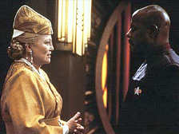 Embora os valores de produo e a atitude do segmento sejam discutveis (incluindo efeitos no melhor estilo Poltergeist), o transparente melodrama pico que se desenvolve tem uma certa pegada. Temas sobre o Emissrio, revisitados por Jake, Kira e o prprio Sisko ajudam ao segmento a ultrapassar algumas (obviamente no todas) de suas limitaes conceituais. Apesar da incerteza quanto s motivaes do ato final de Winn aqui, as suas atitudes no segmento a colocam perfeitamente no caminho sem retorno que levou a sua derrocada ao final da srie. "Valiant" (***) A caminho de Ferenginar (a bordo de um explorador), Jake e Nog so atacados por um esquadro JemHadar e, obrigados a fugir, acabam no lado do Dominion da atual frente de guerra e os dois so salvos no ltimo minuto pela Valiant, uma nave da classe Defiant. A Valiant, operando h oito meses atrs das linhas inimigas, tem como tripulao um bando de cadetes do Red Squad (ver Homefront e Paradise Lost da quarta temporada) que receberam promoes de campo com a morte dos seus oficiais supervisores (a nave originalmente estava em uma misso de treinamento). A tripulao conta (entre outros) com o capito Tim Watters, a comandante Karen Farris e a chefe Dorian Collins. Nog imediatamente promovido a tenente comandante e a engenheiro chefe e consegue recuperar os motores de dobra da nave. A misso original da Valiant era a de coletar informaes sobre um novo supercruzador do Dominion, o que agora eles acabam conseguindo. S que o capito Watters (que j havia dado indcios de um carter autodestrutivo se mostrando um viciado em estimulantes) decide que a nave deve ser destruda j ainda em testes e decide (para total incredulidade de Jake) explorar uma falha de projeto (alis, muito similar falha de projeto da Estrela da Morte em Star Wars). O ataque da Valiant no d resultado e o supercruzador contra-ataca de forma devastadora. Somente Jake, Nog e Collins so salvos pela Defiant que capta o sinal de SOS. Um episdio bastante incomum, protagonizado pelo menos importante regular e um recorrente, junto com um bando de crianas como convidados (e nem todos estes jovens atores convidados funcionam bem aqui, para dizer o mnimo). Apesar destas particularidades e de alguns excessos nas atitudes dos cadetes, um bom conto a respeito da distino entre dever e herosmo emerge do segmento. Nog (e o seu desejo de ser um importante oficial a todo preo) e Jake (o mais longe possvel de um militar na srie) servem como ponto e contraponto para tal discusso. Ao final, usando a personagem mais simptica do Red Squad para mostrar que apesar de tudo, ela ainda no conseguia ver o que realmente tinha acontecido foi um grande final. A direo de Mike Vejar tem algumas falhas, notadamente na montagem de preparao para a batalha que parece mais coisa refugada de alguma pardia Trekker dos Batutinhas. Os efeitos visuais, entretanto so excelentes. "Profit and Lace" (SEM ESTRELAS) "Profit and Lace", ou melhor, dizendo "DS9 apresenta, o Bartender Quark, como 'Lumba - a Drag Queen Ferengi' ", talvez o pior episdio da srie, vergonhoso e constrangedor. 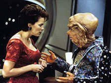 Obviamente Nilva fica tarado por Lumba, que tenta se esquivar do negociador correndo em torno de uma mesa em uma das mais constrangedoras cenas da histria da franquia. Brunt confronta os dois dizendo que "Lumba na realidade Lumbo" (TM) o que obriga Quark a "mostrar os documentos" a todos os envolvidos, que Nilva atesta serem "suficientemente femininos" para ele. Nilva acaba convencido mesmo sem "fazer amor" com Lumba e o futuro de Zek fica assegurado. Parece ruim? Acreditem, muito pior! "Time's Orphan" (*) Os O'Brien decidem fazer um piquenique em um planeta conhecido prximo, Molly se afasta dos seus pais e atravessa um portal temporal, vivendo por 10 anos no passado daquele planeta. De volta, com 18 anos e vivida por Michelle Krusiec, ela incapaz de viver em sociedade. Aps muitas tentativas de tentar trazer Molly18 para o convvio social, os O'Brien tomam a dolorosa deciso de leva-la de volta para "casa". De volta ao passado, Molly18 mostra o caminho de volta a Molly8, que volta aos seus pais, o que efetivamente apaga da existncia a sua verso mais velha. Boa parte da premissa do segmento parece largamente arbitrria, notadamente a existncia de tal "portal" em um planeta conhecido e com propriedades to especificas (Por que no tentar examinar o "outro lado" antes de fazer o procedimento do transporte para traze-la de volta? Por que no mandar algum em primeiro lugar para talvez olhar por ela?). Partindo disto a maior parte das reaes dos envolvidos crvel, apesar de dificilmente tocantes, incluindo a deciso final (Meaney trabalha muito bem como sempre, mas ele no mgico). O dilema moral de eliminar Molly18 em detrimento de Molly8 tirado das mos dos O'Brien no final, em uma concluso que parece indistinguvel de um reset-button formal. Uma "fofinha", neutra e inofensiva histria secundria envolvendo Dax e Worf cuidando de Kirayoshi completa o segmento. Ao lado de "Resurrection" este um dos episdios mais "fora de lugar" de toda a temporada. "The Sound of Her Voice" (**) Voltando de uma misso a Defiant recebe um pedido de socorro de uma certa capito Lisa Cusak que se acidentou em uma planeta a dias de distncia da posio corrente de Sisko e cia. Cusak corre perigo de vida devido a uma extremamente venenosa atmosfera planetria. Durante a viagem de resgate da Defiant a sua tripulao se reveza ao rdio com Cusak. Ao chegar ao local eles encontram somente os restos mortais de Cusak, na realidade as mensagens da capito vinham de trs anos no passado devido a interferncia da radiao nativa daquele corpo celeste. A idia do episdio bastante clara em tentar trazer uma nova perspectiva a estes personagens velhos conhecidos medida que falam com Cusak, o problema que infelizmente o material como escrito no nem um pouco estimulante ou tocante e Cusak nunca se torna algum com quem a audincia possa realmente se importar (que dir lamentar pela sua morte). O que finalmente coloca todo o segmento no caminho da mais perfeita indiferena. A reviravolta do cenrio do resgate mais gratuita do que qualquer outra coisa, principalmente por no ter sido usada noo do deslocamento temporal implicitamente antes no episdio (exatamente como ningum a bordo da Defiant simplesmente no pegou a ficha da capito e somou dois mais dois tambm um completo mistrio). A cena do memorial de Cusak ao final excessiva em apontar a certa morte de um dos membros da tripulao no episdio seguinte (e curiosamente mesmo assim, com tamanhos exageros, passa longe de ser comovente em qualquer sentido e nvel). Uma histria secundria envolvendo Quark e Odo, em que o comissrio (devendo ao Ferengi por uma ajuda com Kira) deixa Quark concretizar um dos seus infames cambalachos ilegais mais material neutro e inofensivo. "Tears of the Prophets" (***1/2) 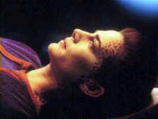 Os Profetas se comunicam com Sisko distncia, que percebe a tragdia que acaba de ocorrer na parte culminante de sua misso (que acaba tendo sucesso). De volta a estao, com a perda de Jadzia e o desaparecimento dos Profetas, Sisko est devastado. Ele tira uma licena e volta a Terra com seu filho, levando a sua bola de beisebol com ele, um sinal de que ele no sabia se iria voltar ou no a DS9. Pelo que faz pelo seu principal personagem, o segmento encerra (apesar dos seus problemas) a temporada com chave de ouro. Sisko colocado com uma deciso crucial nas mos e ele falha com os Profetas (e por conseqncia para com Bajor) e tambm com o seu melhor amigo, algo que ele acaba no conseguindo mais suportar. Toda a preparao por contraste apresentada (Quark e Bashir se lamentando, com direito deliciosa trilha sonora, com Vic Fontaine, por terem perdido Jadzia e o desejo de Worf e Dax de terem filhos, por exemplo), que precede a morte de Jadzia, funciona muito bem. Inclusive as circunstncias (ou falta de circunstncias) da morte da Trill. 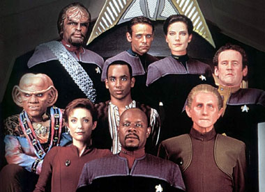 Luiz Castanheira é editor do Trek Brasilis |
 Com
a chegada da edio em DVD da sexta temporada de Deep
Space Nine nos Estados Unidos no comeo deste ms de
novembro, torna-se oportuna uma examinada dos episdios que
compem tal pacote e cuja distribuio (em qualquer forma)
em terras brasileiras ainda incerta (a ltima temporada da
srie sai em dezembro deste ano na Amrica, e ter
cobertura similar do Trek Brasilis).
Com
a chegada da edio em DVD da sexta temporada de Deep
Space Nine nos Estados Unidos no comeo deste ms de
novembro, torna-se oportuna uma examinada dos episdios que
compem tal pacote e cuja distribuio (em qualquer forma)
em terras brasileiras ainda incerta (a ltima temporada da
srie sai em dezembro deste ano na Amrica, e ter
cobertura similar do Trek Brasilis).